InhomogeneousInnerProductLCWP¶
About the InhomogeneousInnerProductLCWP class¶
The WaveBlocks Project
@author: R. Bourquin @copyright: Copyright (C) 2010, 2011, 2012, 2013, 2014, 2015, 2016 R. Bourquin @license: Modified BSD License
Inheritance diagram¶
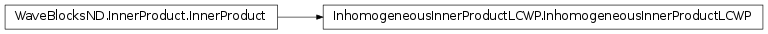Class documentation¶
-
class
WaveBlocksND.InhomogeneousInnerProductLCWP(delegate=None, oracle=None)[source]¶ -
__init__(delegate=None, oracle=None)[source]¶ This class computes the inhomogeneous inner product
 of two linear combinations
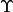 and 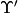. The delegate inner
product class used for computing 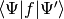
has to be of inhomogeneous type.
of two linear combinations
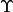 and 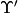. The delegate inner
product class used for computing 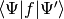
has to be of inhomogeneous type.Parameters: - delegate (A
InnerProductsubclass instance.) – The delegate inner product. - oracle – The sparsity oracle to use. If the variable is
Noneno oracle is used and all integrals are computed.
Note
Make sure to use an inhomogeneous inner product here.
- delegate (A
-
build_matrix(lcbra, lcket=None, operator=None, component=None, eval_at_once=False)[source]¶ Delegates the computation of the matrix elements of
for a general function  with 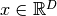.
The matrix is computed without including the coefficients
with 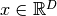.
The matrix is computed without including the coefficients  and 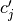.
and 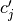.Parameters: - lcbra – The linear combination from the bra with
 summands
summands  .
. - lcket – The linear combination from the ket with
 summands
summands  .
. - operator – A matrix-valued function
 .
. - component (Integer or
None, default isNone.) – The index of the component
of the component  of . If set only those
components will be taken into account for the computation.
of . If set only those
components will be taken into account for the computation. - eval_at_once (Boolean, default is
False.) – Flag to tell whether the operator supports theentry=(r,c)call syntax.
Returns: A matrix of size 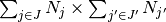.
Type: An
ndarray.- lcbra – The linear combination from the bra with
-
get_delegate()¶ Return the
Quadraturesubclass instance used for evaluation of this inner product.Returns: The current instance of the quadrature.
-
get_description()[source]¶ Return a description of this inner product object. A description is a
dictcontaining all key-value pairs necessary to reconstruct the current instance. A description never contains any data.
-
quadrature(lcbra, lcket=None, operator=None, component=None, eval_at_once=False)[source]¶ Delegates the evaluation of
for a general
function with .Parameters: - lcbra – The linear combination from the bra with summands .
- lcket – The linear combination from the ket with summands .
- operator – A matrix-valued function .
- component (Integer or
None, default isNone.) – The index of the component of . If set only those
components will be taken into account for the computation. - eval_at_once (Boolean, default is
False.) – Flag to tell whether the operator supports theentry=(r,c)call syntax.
Returns: The value of
.Type: An
ndarray.- lcbra – The linear combination from the bra with
-
set_delegate(delegate)¶ Set the
Quadraturesubclass instance used for quadrature.Parameters: delegate – The new Quadratureinstance.
-